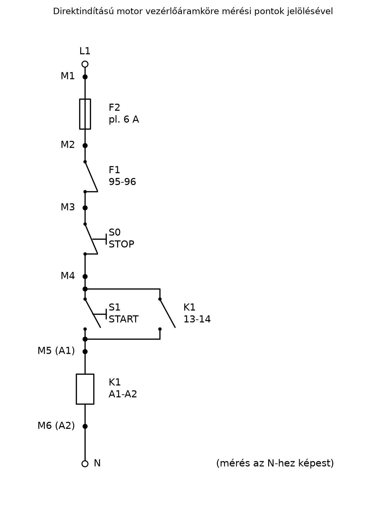

Az üzemi gyakorlatban a legtöbb hibakeresési feladat nem az erősáramú motor, hanem a vezérlőáramkör felé mutat. A motorterhelés, a kapcsolókészülékek és a kábelezés viszonylag ritkán hibásodik meg önmagától; a vezérlőáramkör viszont sok kisméretű mechanikus és villamos érintkezőt, csatlakozást, biztosítékot és tekercset tartalmaz. Ha a szerelő nem módszeresen keresi a hibát, akkor könnyen “alkatrészcserélő” lesz, aki próbálgatással dolgozik, időt és pénzt pazarol, ráadásul feszültség alatti szereléssel veszélyeztetheti magát. Ezért ennek az alfejezetnek a célja, hogy a Direktindítás, önfenntartás és kezelőszervek és a Kétsebességű, sorrendi és késleltetett vezérlések alfejezetben megismert kapcsolásokon keresztül módszeres, méréssel igazolt hibakeresési rutint alakítson ki.
A hibakeresés módszerét egy legegyszerűbb direkt indítású, önfenntartással rendelkező motorvezérlésen mutatjuk be. Ez a kapcsolás a Direktindítás, önfenntartás és kezelőszervek alfejezetből ismert, így a rajzjelek és a működés nem új. A kapcsolási rajzon a tipikus mérési pontokat M1–M6 jelöli; a mérés mindig a vezérlő N vezetőjéhez, mint referenciaponthoz képest értendő.

A mérőpontok a következők: M1 az F2 biztosíték előtt, M2 az F2 után, M3 az F1 hőkioldó 95–96 bontóérintkezője után, M4 az S0 nyomógomb után, M5 a K1 tekercs A1 kapcsán, M6 a tekercs A2 kapcsán. A hibakeresés során ezeken a pontokon mérünk feszültséget az N sorkapocshoz képest, vagy ellenállást kikapcsolt állapotban. A rajz a Reverzáló kapcsolás és reteszelés elvét követi: minden kapcsolóelem (F2, F1 95–96, S0, S1 ∥ K1 13–14) a tekercs fázisoldalán van, a tekercs A2 kapcsa közvetlenül az N-re csatlakozik (a Direktindítás, önfenntartás és kezelőszervek rajzán az F1 közvetlenül a tekercs előtt van, de szintén a fázisoldalon). Így egy, az A1 oldalon fellépő testzárlat sem tudja áthidalni a bontóérintkezőket, és minden mérőpont információt ad: ép áramkörben az M6 (A2) 0 V, de ha az A2–N vezeték szakadt, az M6 is 230 V-ot mutat.
A következő ábra a lánc hat mérőpontját és a jellegzetes hibák várt feszültségmintázatát mutatja (START lenyomva / elengedve, az N-hez képest). Például kiolvadt F2-nél M1 = 230 V, M2–M6 = 0 V; kioldott F1-nél M1 = M2 = 230 V, M3–M6 = 0 V; szakadt tekercsnél A1 (M5) = 230 V, A2 (M6) = 0 V, és a K1 nem húz be; szakadt A2–N vezetéknél M5 = M6 = 230 V; hibás 13–14 érintkezőnél a K1 a START lenyomásakor behúz, elengedéskor elejt. A HTML-kiadásban hibát lehet beépíteni (választva vagy véletlenszerűen), a mérőpontokra kattintva a virtuális műszer kijelzi a feszültséget, a „Megoldás” gomb pedig a teljes táblázatot mutatja.
Definíció. A vezérlési hibakeresés olyan, egymásra épülő lépéssor, amelyben a tünet pontos megfigyeléséből lehetséges okok halmazát képezzük, majd mérésekkel addig szűkítjük a kört, amíg a tényleges hibás elemet vagy csatlakozást be nem azonosítjuk.
A módszer lényege: soha ne találgassunk, hanem minden állítást méréssel igazoljunk. A hibakeresésnek van egy szabályos ritmusa, amely nagyon hasonlít az orvosok diagnosztikai folyamatához. Az eljárás lépései:
Törvény. A tünet soha nem azonos a hibával; a tünet a hiba következménye. A hibakereső akkor dolgozik jól, ha a tünet ismeretében a legvalószínűbb, könnyen mérhető, közös okokat vizsgálja először.
A vezérlőáramkör hibakeresésének leggyorsabb, mégis nagyon informatív eszköze a váltakozó feszültség mérése. A multimétert feszültségmérés állásba kapcsoljuk; a mérést mindig két pont között végezzük, a fekete mérőzsinór a referencia N vezetőre kerül, a piros mérőzsinórral pedig a vizsgált mérőpontot érintjük meg. A mért érték a vizsgált pont és az N közötti potenciálkülönbség.
Szabály. Ha a mért feszültség a névleges 230 V körüli érték, akkor az adott pontig az áramkör zárva van. Ha a mért érték 0 V vagy nagyon alacsony, akkor a vizsgált pont előtt szakadás, érintkezőhiba vagy kiolvadt biztosíték van.
Példa: M1 ponton 230 V, de M2 ponton 0 V mérhető. Ebből az következik, hogy a hálózat rendben van, de az F2 biztosíték kiolvadt, vagy a biztosíték foglalatában lévő érintkező szakadt. Fontos, hogy ilyenkor még ne cseréljük ki a biztosítékot, mert a mögöttes rövidzár miatt az új biztosíték is kiéghet; előbb kikapcsolt állapotban meg kell mérni a mögöttes ág ellenállását.
Másik példa: M4 ponton 230 V, M5 (A1) ponton 0 V, mert az S1 START nyomógomb alaphelyzetben nyitott, és a K1 segédérintkező is nyitott. A 0 V az M5 ponton normális, ha az S1 nincs megnyomva. Ha viszont a START gombot benyomják, és az M5 ponton továbbra is 0 V marad, akkor a hiba a S1 vagy a K1 13/14 segédérintkező környezetében keresendő.
Megjegyzés. Feszültségmérésnél mindig ellenőrizzük a műszer méréshatárát és kategóriáját (CAT), és csak olyan mérőzsinórt használjunk, amelynek szigetelése ép, a mérőcsúcs nem lóg ki. A vezérlőáramkör jellemzően hálózati feszültségű, ezért a mérés feszültség alatti része csak jogosult személynek vagy tanműhelyi gyakorlaton, szigorú felügyelet mellett megengedett.
1. példa – Kiolvadt vezérlőbiztosíték. A motor nem indul; a mágneskapcsoló egyáltalán nem húz be. A kapcsolási rajz szerint sorban mérünk: M1 ponton 228 V, M2 ponton 0 V. Mivel az M2 pont már az F2 biztosíték után van, a hiba az F2-re vagy a hozzá tartozó foglalatra mutat. Kikapcsolás és öt biztonsági szabály után az F2-t kivesszük; a foglalatban égésnyomot látunk, a biztosíték betétje kiolvadt. A mögöttes ág mérésénél a K1 tekercs ellenállása a névleges érték körül van, tehát nincs rövidzár. A kiváltó ok valószínűleg a lazult csatlakozás okozta túlmelegedés volt. Javítás: a foglalat cseréje, a kötés utánhúzása, új biztosíték behelyezése.
2. példa – Szakadt indítógomb. A motor nem indul, de a vezérlő feszültség az M2 ponton rendben van (230 V). Az M3 és az M4 ponton is 230 V mérhető, tehát az F1 95–96 és az S0 STOP érintkező zárva van. A START nyomógomb benyomásakor az M5 (A1) ponton 0 V marad. A K1 13/14 önfenntartó érintkező ilyenkor még nem játszik szerepet, mert a K1 nincs behúzva, tehát nyitott; a tekercset most csak az S1 tudná feszültség alá helyezni. Az S1 érintkezője tehát nem zár (szakadt, elkopott vagy oxidált érintkező, laza kötés). A mérés szerint az S1 bemenete (M4) feszültségen van, kimenete (M5) benyomva sem kap feszültséget, ez pontosan az indítógomb hibájára utal. Javítás: az S1 nyomógomb cseréje.
A gyakorlatban a következő hibák fordulnak elő leggyakrabban, ezért ezeket érdemes tudatosan ellenőrizni:
Csatlakozási hiba. A laza kötés a vezetéksaru alatt melegszik, szigetelés barnul, és idővel szakad vagy ívet húz. Tünete lehet időszakos üzemkiesés, halvány jelzőlámpa, égett szag. Feszültségmérésnél a kötés előtt még rendben van, utána már hiányzik a feszültség. Javítás: a kötés megtisztítása, utánhúzása, ha kell, az érvéghüvely cseréje.
Vezérlőbiztosíték kiolvadása. A biztosíték nem mentesít a mögöttes hiba felderítése alól. A kiolvadás oka lehet rövidzár, túlterhelés vagy a biztosíték öregedése. Mérésnél a biztosíték előtt van feszültség, utána nincs. Javítás: a mögöttes ág ellenállásának mérése, a hiba elhárítása, majd ellenőrzött értékű biztosíték behelyezése.
Érintkezőhiba (kopott, oxidált vagy beégett kontaktus). A nyomógombok, segédérintkezők, relékontaktusok mechanikusan kopnak. Az érintkező ellenállása megnő, feszültségesést okoz. Tünet lehet, hogy a tekercs nem húz be teljesen, vagy zizeg. Javítás: kontaktus tisztítása vagy az egység cseréje.
Tekercs szakadása. A mágneskapcsoló tekercse kikapcsolt állapotban ellenállásméréssel ellenőrizhető. Ha a multiméter végtelen ellenállást mutat, a tekercs szakadt. Feszültség alatt (N-hez mérve) az A1 ponton 230 V, az A2 ponton 0 V, és a kontaktor nem húz be: a tekercsen a teljes feszültség esik, mégsem működik, ez tekercsszakadásra (vagy mechanikus beragadásra) utal; ha A1 és A2 is 230 V, a tekercs ép, a szakadás utána, az A2–N kötésben van. A szakadás ellenállásméréssel, kikapcsolt állapotban bizonyítható. Javítás: a tekercs vagy a teljes mágneskapcsoló cseréje.
Mechanikus beragadás. A hőkioldó visszajelzése, a kioldott retesz vagy a nyomógomb beragadása miatt a vezérlés nem indul. Ilyenkor először a mechanikus állapotot ellenőrizzük, nem az áramkört.
Gyakorlat. A fenti hibák közül mindig azt keressük, amelyik a legjobban illik a tünethez, és a legkönnyebben mérhető. Például ha a mágneskapcsoló egyáltalán nem zúg, akkor inkább a soros ág feszültségét mérjük, mint a tekercs ellenállását.
Recept. Az alábbi ellenőrzőlista a hibakeresés minimális, de teljes sorrendjét adja. A lépéseket mindig a feszültségmentesítés öt biztonsági szabálya után végezzük, hacsak a mérés jellege nem követeli meg a feszültség alatti vizsgálatot.
Cél. Tanműhelyi, direkt indítású motorvezérlésen (oktató felügyelete mellett) hibakeresési gyakorlat elvégzése: a szándékosan beépített hibát mérésekkel be kell határolni és meg kell nevezni.
Eszközök és anyagok. Multiméter (feszültség- és ellenállásmérés), szigetelt kéziszerszámok, kapcsolási rajz, a vizsgált vezérlés (pl. direkt indítás önfenntartással, S0, S1, K1, F1, F2).
Biztonsági korlát. A feladat tanműhelyi (törpefeszültségű) környezetre vagy jogosult oktató felügyeletére vonatkozik; hálózati feszültségen önállóan ne végezd.
Az öt biztonsági szabály: 1. Lekapcsolás. 2. Visszakapcsolás elleni biztosítás (kizárás, lakat, tábla). 3. Feszültségmentesség ellenőrzése két, egymástól független műszerrel vagy műszeres ellenőrzéssel. 4. Földelés és rövidre zárás, ha indokolt. 5. A szomszédos, feszültség alatt álló részek lefedése.
Lépések:
Ellenőrzés. A gyakorlat akkor sikeres, ha a tanuló meg tudja nevezni a hibát, meg tudja mutatni a mérési pontokat, és a mért értékekkel meg tudja indokolni a hibás elem kiválasztását.
Tünet. A motor nem indul, és a K1 mágneskapcsoló sem húz be. A kezelő a START gombot nyomva tartja, de semmi nem történik; a K1 nem zúg, a kapcsolás néma.
Hipotézisek. A lehetséges okok: F2 vezérlőbiztosíték ki, S0 bontó érintkezője szakadt, S1 záró érintkezője hibás, K1 13–14 önfenntartó érintkezője szakadt, K1 tekercs szakadt, F1 hőkioldó 95–96 érintkezője nyitott, vagy a kötéseknél szakadás van.
Mérések. Először feszültségméréssel szűkítünk. A mérőzsinór fekete csatlakozója az N sorkapcsra kerül. A piros mérőzsinórral sorban mérünk:
Ezután a tekercs A2 pontján is mérünk: M6 (K1 A2) 0 V. A rajz szerint az A2 kapocs közvetlenül az N-re csatlakozik, ezért ép N-kötésnél az A2 0 V-on van; szakadt tekercsnél az A2 az N-en marad (0 V), és a teljes 228 V a szakadt tekercsen esik. Következtetés: a tekercsen 228 V esik, mégsem húz be, tehát tekercsszakadás gyanúja áll fenn (vagy a mágneskapcsoló mechanikusan beragadt). Ha viszont M5 és M6 is 228 V lenne, a tekercs ép, és a szakadás utána, az A2–N vezetékben vagy az N sorkapocsnál van. A következtetést kikapcsolás után az ellenállásmérés erősíti meg.
Kikapcsolt mérés. A berendezést lekapcsoljuk, elvégezzük az öt biztonsági szabályt. A K1 tekercs A1–A2 ellenállását mérjük; a multiméter „OL” (végtelen) értéket mutat. Ok. A K1 tekercs szakadt. Javítás. A tekercset vagy a mágneskapcsolót cseréljük. Visszaellenőrzés. Új tekercs beépítése után visszakapcsolva a K1 behúz, a motor elindul. Megelőzés. A tekercs túlfeszültség-csúcsai ellen célszerű a gyártó által ajánlott RC-védőtagot vagy varisztort alkalmazni, ha a kapcsolásban ez hiányzik.
Egy élelmiszeripari csomagológép karbantartója azt tapasztalta, hogy a gép hajtómotorja időnként leáll, majd magától újra elindul. A tünet véletlenszerű volt, ezért a hiba keresése napokig tartott. A módszeres vizsgálat során először a vezérlő feszültséget mérték loggoló multiméterrel; kiderült, hogy a K1 mágneskapcsoló tekercsének feszültsége rövid időre leesik, amikor a gép rezgése a legnagyobb. A szemrevételezés végül egy rosszul meghúzott sorkapocs-csatlakozást talált a vezérlőáramkörben, amely a rezgés hatására megszakadt. A kötés utánhúzása és a sorkapocs rögzítése megszüntette a rendszertelen üzemkiesést. A tanulság: a szakaszos hiba is módszeresen megtalálható, ha a tünetet pontosan rögzítjük, és a mérési pontokat a rezgésnek, hőmérsékletnek vagy más környezeti hatásnak kitett helyeken is ellenőrizzük.
Hiba 1: Alkatrészpróbálgatás mérés nélkül. A szerelő először kicseréli a biztosítékot, majd a nyomógombot, majd a tekercset. Ez lassú, drága, és elfedheti a valódi okot. Helyes: előbb méréssel azonosítsd a hibás elemet.
Hiba 2: Feszültség alatti mérés rossz műszerrel. A fázisceruza vagy a régi, alacsony kategóriájú multiméter nem alkalmas a vezérlőáramkör megbízható mérésére. Megfelelő CAT besorolású, ép mérőzsinórral rendelkező műszert használj.
Hiba 3: A kiolvadt biztosítékot azonnal cseréli. Ha az F2 biztosíték kiolvadt, a mögöttes rövidzár vagy a laza kötés miatt az új biztosíték is kiolvadhat, sőt tüzet is okozhat. Helyes: kikapcsolt állapotban mérjük a mögöttes ág ellenállását, és csak azután helyezzünk be új biztosítékot.
Hiba 4: A hőkioldó kioldását figyelmen kívül hagyja. A hőkioldó jelzése nem egyszerűen egy “visszaállítandó gomb”, hanem túlterhelésre vagy aszimmetriára utaló jel. Ha a hőkioldó rendszeresen kiold, a motoráramot is mérni kell, nemcsak a kioldót visszaállítani.
1. feladat (A). Sorold fel a tünet–ok–mérés módszer legalább négy lépését.
2. feladat (A). A direkt indítású vezérlésen (lásd a diagramot) a motor nem indul. A mérések: M1=230 V, M2=230 V, M3=230 V, M4=0 V. Melyik elem hibásodhat meg? Indokold. Mire következtetnél, ha már az M3-on 0 V lenne?
3. feladat (B). A következő mérési sorozatot vetted fel: M1=0 V, M2=0 V, M3=0 V, M4=0 V. Mi a hiba? Mi a legvalószínűbb ok?
4. feladat (B). Kikapcsolt állapotban méred a K1 tekercs ellenállását: 0,7 Ω-ot kapsz. A tekercs névleges feszültsége 230 V, a gyártó szerint a névleges áramfelvétel 0,3 A. Helyes-e az ellenállásmérés? Mi lehet a baj, és hogyan ellenőriznéd?
5. feladat (C). A motor nem indul, és a K1 nem húz be. A feszültségmérés: M1=230 V, M2=230 V, M3=230 V, M4=230 V, M5 (A1)=230 V, M6 (A2)=0 V a START gomb benyomásakor. Kikapcsolás után a K1 tekercs ellenállása végtelen. Melyik elem hibás, és mi bizonyítja a feszültségmérésből, majd az ellenállásmérésből? Ismertesd a javítás lépéseit.
6. feladat (D). Gyakorlati hibakeresési feladat: egy tanműhelyi direkt indítású vezérlésen a motor nem indul, de a K1 behúz. Milyen két irányt vizsgálnál (erősáramú és vezérlési), és milyen mérésekkel? Mondd el a vizsgálati lépéseket.
Önellenőrzés – válaszok
1. feladat (A). A módszer lépései: tünet pontos megfigyelése; lehetséges okok felsorolása; mérési terv készítése; mérés és kiértékelés; javítás és utóellenőrzés. (Bármely négy elfogadható.)
2. feladat (A). M4 az S0 STOP után van, és a mérés 0 V. Ez azt jelenti, hogy az S0 bemenete (M3) még feszültségen van, de kimenete (M4) nincs, tehát az S0 bontó érintkezője szakadt (vagy beragadt benyomott állapotban), vagy a hozzá tartozó csatlakozás hibás. Ha már az M3-on 0 V lenne (M2 = 230 V mellett), akkor az F1 95–96 érintkezője nyitott: a hőkioldó kioldott (ellenőrizd a kioldásjelzőt, és keresd a túlterhelés okát), vagy a 95–96 érintkező, illetve a bekötése hibás.
3. feladat (B). Már M1-en sincs feszültség, ami arra utal, hogy a vezérlő tápfeszültség hiányzik, vagy a mérőműszer nincs jól csatlakoztatva. Legvalószínűbb ok: a vezérlőtáp megszakadt, a főkapcsoló le van kapcsolva, vagy a vezérlő transzformátor nem ad feszültséget. Ellenőrizni kell a vezérlőtápforrás oldalát és a mérési referenciapontot.
4. feladat (B). A mért 0,7 Ω ellenállás nagyon alacsony a 230 V-os, 0,3 A-es tekercshez, mert a a tekercs impedanciája (tartási állapotban); az egyenáramú ellenállás ennél jóval kisebb, jellemzően néhány tíz–néhány száz Ω (ellenőrizendő: gyártói adat). A 0,7 Ω még ehhez képest is két nagyságrenddel kevés: menetzárlat vagy párhuzamos ág mérése valószínű. A mérés hibás lehet, mert a tekercset feszültség alatt vagy párhuzamos ágban mérted, vagy a tekercs rövidzárlatos. Ellenőrizd, hogy a mérés kikapcsolt állapotban, a tekercs kivezetéseiről, a párhuzamos elemek kizárásával történt.
5. feladat (C). A hiba a K1 tekercs szakadása. A feszültségmérés is erre utal: M1…M4 = 230 V, tehát az F2, az F1 95–96 és az S0 rendben van; A1 (M5) = 230 V, A2 (M6) = 0 V, tehát a teljes feszültség a tekercsen esik, mégsem húz be; az ellenállásmérés (végtelen) igazolja. A javítás: feszültségmentesítés, az öt biztonsági szabály, a tekercs ellenállásának mérése (végtelen), a tekercs vagy a mágneskapcsoló cseréje, majd visszakapcsolás és működési próba.
6. feladat (D). Mivel a K1 behúz, a vezérlőáramkör jó. Először az erősáramú főáramkört vizsgáljuk: a K1 főérintkezők zárnak-e, a motor kábelezése ép-e, a motor kapcsain van-e feszültség. Feszültség alatt megmérjük a K1 főérintkezők be- és kimenete közötti feszültségesést (ideális esetben közel 0 V). Kikapcsolt állapotban mért érintkező-ellenállás és motor tekercsellenállás is segít. Ha a főáramkör a K1-ig rendben van, a hőkioldó főáramköri hőelemeinek folytonosságát (szakadt hőelem) és a motort vizsgáljuk; leoldott hőkioldó nem lehet az ok, mert akkor a K1 nem húzna be (az F1 95–96 bontó nyitva lenne). A méréseket feszültség alatt csak jogosult személy, a vizsgálatokat feszültségmentesítés után (öt lépés) végezzük.
A vezérlési hibakeresés alapelve, hogy a tünetet nem szabad a hibával azonosítani; a tünetből kiindulva, a kapcsolási rajz ismeretében lehetséges okokat sorolunk fel, majd mérésekkel szűkítjük azok körét. A vezérlőáramkör leggyorsabb vizsgálati eszköze a feszültségmérés: a mérőpontokon az N-hez képest mért feszültség jelenléte vagy hiánya megmutatja, hogy a vizsgált pont előtt van-e szakadás vagy érintkezőhiba. A gyakori hibák: laza csatlakozás, kiolvadt biztosíték, érintkezőhiba, tekercs szakadás és mechanikus beragadás. Továbbvitt eredmény. A tünet–ok–mérés módszer, a mérési pontok kiválasztása és a szisztematikus javítási sorrend nélkülözhetetlen a PLC-alapok és ipari vezérlés alfejezetben tárgyalt modernebb vezérlések hibakeresésénél is, ahol a feladat ugyanúgy a tünet megfigyeléséből, a program és a fizikai jelek ellenőrzéséből, majd a hiba méréssel történő behatárolásából áll.
A szöveg a magyarországi és európai gyakorlatot követi; a kapcsolókészülékekre és vezérlésekre vonatkozóan az MSZ EN 60947 sorozat és a gépi villamos berendezések MSZ EN 60204-1 szabványa irányadó (ellenőrizendő: pontos szabványkiadás és aktuális hibavédelmi előírások). A mérési kategóriákra vonatkozó határértékek a mérőműszer gyártói adatlapjából származnak; a vezérlőbiztosíték névleges értékét a kapcsolási tervekben megadott értékhez kell igazítani. A konkrét alkatrészek, érintkezők és tekercsek ellenállása a gyártói adatoktól függ, ezért az itt megadott értékek tanulási példák, nem kivitelezési előírások. Az aktuális munkavédelmi és szabványossági követelményeket a hatályos jogszabályok határozzák meg.